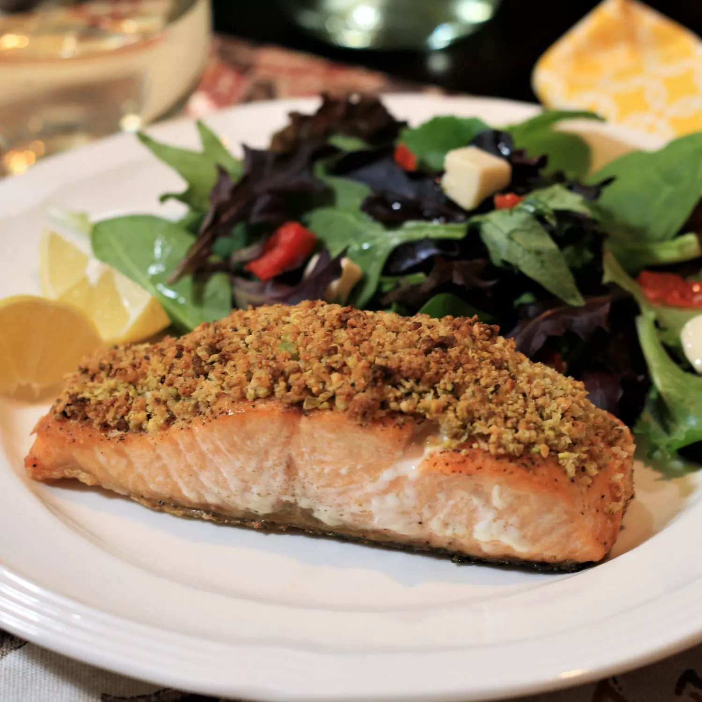

<body>
    <h1>It's a Salmon-ey</h1>
        
        <p>First of all, you need a high quality salmon</p>
        <p>Second, cook it on the pan</p>

        <h3>Ingredients you need</h3>
        <ul>
            <li>Norweigen salmon</li>
            <li>salad</li>
            <li>lemon</li>
        </ul>

        <h3>Steps</h3>
        <ol>
            <li>Preheat the oven to 175 degree</li>
            <li>Put the seasonings under the salom</li>
            <li>Roast for 50mins</li>
        </ol>
</body>